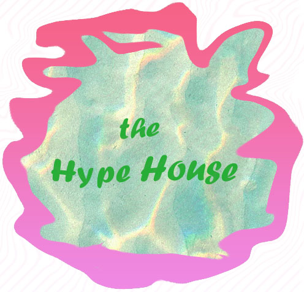

Logo
Criteria 5: An example of something you are particularly proud of
I am most proud of my soundscape, but since that is included in a different part of this portfolio, I will be talking about my logo assignment instead, which I am also very proud of. I struggled to create my logo in class but was able to revise it to a point where I was happy with what I created. As I mentioned in a previous reflection, the photoshop unit was not my best. But, through this previous revision, I was able to further explore photoshop and develop a lot of skills. I think my logo fits the vibe of The Hype House and my own personal aesthetic as well. I would print this out and put it on my bulletin board. If I were to adapt this into a future work, I would keep the color aesthetic and curvy aspects of the logo. I think it could make a cool design on a future journal of mine.
